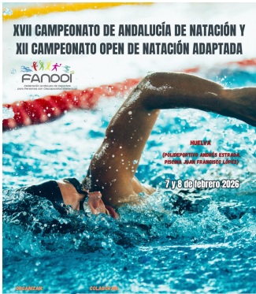
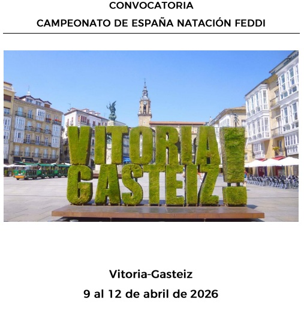

Resultados de Natación
Eventos de Natación por Fechas
Ningún evento registrado
Campeonato de Andalucía de Natación Fanddi 2026
-Huelva-
21 y 22 de Febrero de 2026

Huelva Piscina 25 m - Juan Francisco López
Información del evento:
Finalizado
- Resultados Web Oficial
- Resultados - pdf
- Bases
- Normativa Técnica
- Listados Inscritos
- Nuevas Series
- Nuevos Horarios
- Como Llegar
Campeonato de España de Natación por Autonomías Conjunto 2026
-Cádiz-
28 y 29 de Marzo de 2026

Cádíz Piscina 50 m. Piscina Municipal Complejo Deportivo “Ciudad de Cadiz”.
Avenida Periodista Beatríz Cienfuegos s/n.
Teléfono: 956 263 307 - 956 211 256
Información del Evento:
Pendiente
Campeonato de España de Natación FEDDI
Vitoria
Del 09 al 12 de Abril de 2026

Vitoria: Piscina de 50m”
Información del evento:
Pendiente


Con el Patrocinio de la Diputación Provicial de Málaga
Se informa que de la Excma. Diputación de Málaga, los deportistas:
- Luis Barbero, Julia Fernández, Manuel Guerrero, José Macías Arquillo, Jorge Otalecu
han sido beneficiarios de una subvención concedida en el marco de la convocatoria en régimen de concurrencia competitiva destinada a “Deportistas de la provincia de Málaga que compitan, individualmente o por pareja.
Esta ayuda les permitirá seguir superándose en la vida a través del DEPORTE.
Enhorabuena a nuestros deportistas y gracias a la Diputación de Málaga
Calendario de Eventos, Actividades Deportivas y Lúdicas
Calendario Ampliado